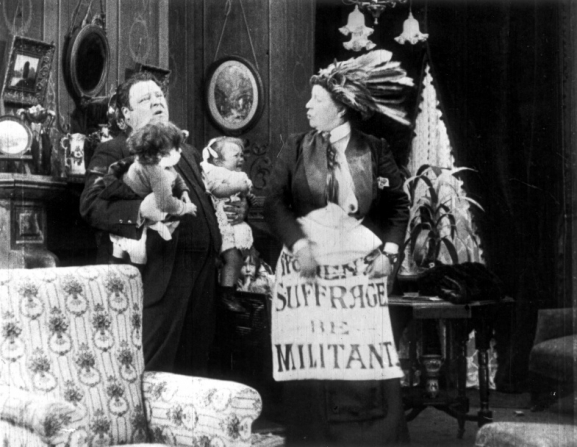
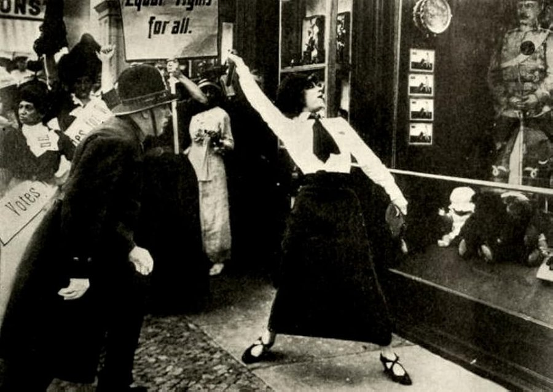

Suffragettes on British Screens
A research database of films related to the women's suffrage movement
1906–1918
Compiled from Kinematograph Weekly & The Bioscope
Images: Milling the Militants (Clarendon, 1913) · Asta Nielsen, Suffragette (Die Suffragette; PAGU, 1913)
| No. |
Title |
Year |
Country |
Genre |
Production Co. |
Status |
No films match your search.